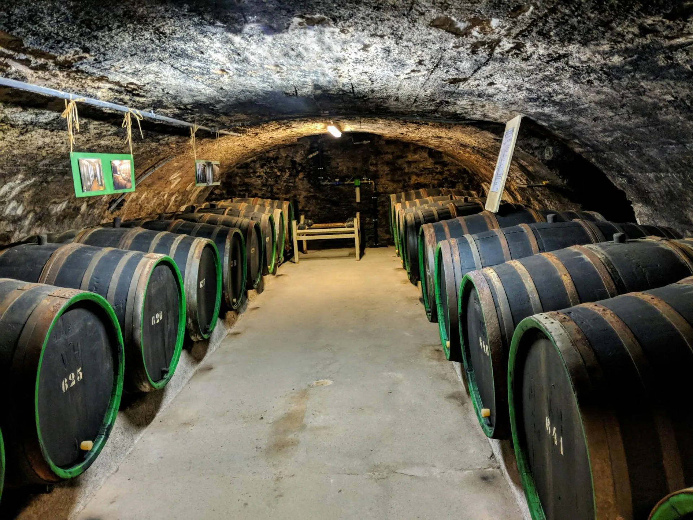

The Harvest:
A Twelve-Day Window
In Champagne, the harvest window is as narrow as twelve days. Pick too early: insufficient sugar, green flavour. Too late: acid loss, flaccid wine. The decision rests entirely with our chef de cave, who walks the parcels each morning in the final weeks, tasting and calculating.
At Maison Éclat, all picking is by hand — no exceptions. Mechanical harvesters break the berries and mix juice with skin tannin before it reaches the press. We will not permit that. Ninety pickers, selected from a standing roster of experienced hands, harvest our 42 hectares in twelve days of relentless, careful work.
"We pick at first light and press before noon. The grape must never warm. Oxidation is the enemy of precision."


The Blending:
Memory in a Glass
Each spring, Caroline Lefèvre conducts the most critical exercise of the winemaking year: the assemblage. She tastes up to 200 base wines from different parcels, vintages, and varietals — a task requiring weeks of concentration and the kind of palate memory that takes a lifetime to build.
Our non-vintage cuvées incorporate reserve wines from up to fifteen previous harvests, stored in temperature-controlled tanks and small oak barrels. These reserves are the backbone of consistency — ensuring that Cuvée Lumière tastes of Maison Éclat above all, regardless of vintage variation.
"A non-vintage champagne is not a lesser product. It is a harder one. The winemaker must impose a consistent vision onto nature's inconsistency."
Second Fermentation:
The Birth of the Bubble
The liqueur de tirage — a precise mixture of still wine, sugar, and selected yeasts — is added to the still base wine before bottling. The bottle is sealed with a crown cap and placed horizontally in our caves. Over six weeks at 11°C, the yeasts consume the sugar and produce alcohol and carbon dioxide.
The CO₂, unable to escape, dissolves into the wine under pressure — approximately 6 atmospheres, equivalent to the tyre of a double-decker bus. When the bottle is eventually opened, that pressure releases as a stream of fine, persistent bubbles: the signature of a champagne made by this method and no other.
"Bubble size is everything. Coarse bubbles = clumsy wine. Fine, persistent bubbles = a champagne of elegance. Secondary fermentation in bottle, slowly, is the only path to the latter."

Ageing on Lees:
Time as Ingredient
When the second fermentation is complete, the spent yeast cells — les lies — begin to break down. This process, called autolysis, releases amino acids, proteins, and fatty acids that transform the wine's character over the following years: brioche, cream, almond paste, biscuit, and a distinct toasty depth that no addition can simulate.
The legal minimum for non-vintage Champagne is fifteen months on lees. At Maison Éclat, our non-vintage minimum is 42 months. Our prestige cuvées do not leave the caves before eight years. Our perpetual reserve blend carries wines from 1972. We are not interested in the minimum.
"Non-vintage minimum: 42 months (legal: 15). Vintage minimum: 8 years (legal: 3). Les Craies: indefinite."
The Riddling:
40,000 Turns a Day
When the ageing is complete, the bottles must be gradually inverted to collect the spent yeast sediment in the neck — a process called riddling, or remuage. Each bottle is placed neck-down in a pupître (riddling rack) and rotated a precise eighth-turn daily, with the angle of inclination gradually increasing over eight weeks.
Many houses now use computerised gyropalettes that replicate this process in seven days. We employ human riddlers — each turning 40,000 bottles per day from muscle memory refined over years of apprenticeship. The result is imperceptibly but definitively superior: the sediment is collected with more complete precision, and nothing about the act of riddling is separated from the care of a living hand.
"There are nine riddlers employed at Maison Éclat. The most experienced, Bernard Girard, has been turning bottles here for 31 years."
Disgorgement:
A Champagne is Born
The inverted bottle neck is plunged into a bath of freezing brine — typically -27°C — which solidifies the plug of sediment in the neck. The crown cap is removed, and the internal pressure expels the frozen plug in a single, sharp movement. The wine is perfectly clear; the sediment is gone.
At this precise moment — before the bottle is re-corked — the dosage is added: a liqueur d'expédition composed of reserve wine and cane sugar, calibrated precisely to define the final style of the cuvée. Zero grams for our Brut Nature; three grams for the Extra Bruts; up to twelve for our sweeter expressions. This is the chef de cave's final creative act. The bottle is then immediately corked, wired, and dressed. A champagne is born.
"We use dosage to reveal, never to correct. If a wine requires high dosage to be pleasant, it was not ready. We wait."